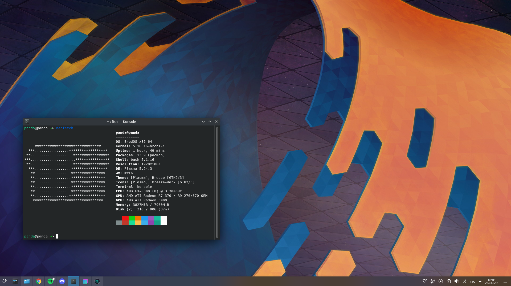

Features
Privacy
BredOS does not collect or store any info from user installations.
Customizable
BredOS is really customizable no matter which desktop environment you choose.
Powerful
With built-in support for AUR, Chaotic AUR and being lightweight, BredOS gives you the power to do whatever you want on your Bred PC.
Rolling
BredOS is a rolling release distribution based on Arch, that is always updated and never behind!
Dual Boot
You can install BredOS alongside Windows or macOS to keep your files and apps. You'll be able to choose which OS to use at each boot-up.
Accessibility.
BredOS is translated into over 100 languages. It includes a screen reader, magnifier, click assist, and other assistive technologies.